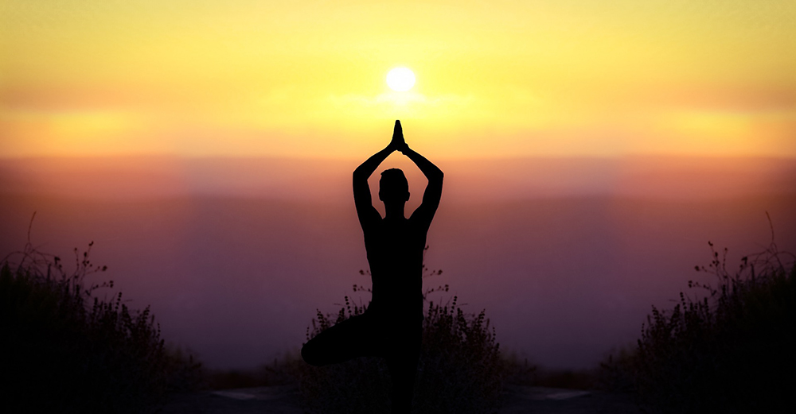

Лечение
Отдых
Природа
Йога
Здоровый позвоночник
Йога, массажи и плавание в море - помогут уставшей спине! Индийские йоги считали, что здоровье человека можно определить по тому, насколько здоров и гибок у него позвоночник.
Интересно, что бы древние йоги сказали, глядя на современного человека, который уже со школьного возраста мучается болями в спине, работает подолгу в неудобных сидячих позах и не умеет расслабляться, имеет искривление, которое в итоге приведет к болезням других органов? Йоги сказали бы – займись собой и срочно!
Интересно, что бы древние йоги сказали, глядя на современного человека, который уже со школьного возраста мучается болями в спине, работает подолгу в неудобных сидячих позах и не умеет расслабляться, имеет искривление, которое в итоге приведет к болезням других органов? Йоги сказали бы – займись собой и срочно!
Узнать подробнее

Антистресс
Аюрведа и йога утверждают, что главным источником здоровья нашего организма является здоровый ум. Программа «Антистресс» сначала убирает последствия стресса на физическом уровне, потом помогает избавиться от негативных и навязчивых мыслей, затем повышает общий уровень энергии.
Вы наконец вспомните ощущение "свободной головы", ощутите прилив физических сил и вспомните, что такое счастье.
Вы наконец вспомните ощущение "свободной головы", ощутите прилив физических сил и вспомните, что такое счастье.
Узнать подробнее
Восстановление
Стрессы, жизнь в условиях города, плохая экология, загрязненные продукты и вода, напряженный ритм жизни - все это день ото дня отбирает у нас молодость и хорошее здоровье.
Одним кремом для лица не решить проблему омоложения организма, когда тебе за 40. Согласны?
Одним кремом для лица не решить проблему омоложения организма, когда тебе за 40. Согласны?
Узнать подробнее
Йога и аюрведа
Несколько лет назад мы разработали специальные программы по йоге и аюрведе - и мы поняли, что они отлично работают - на опыте 530 наших туристов! В каждой из этих программ есть одна цель, на достижение которой будут направлены и асаны, и дыхательные практики, и медитации, и аюрведические процедуры, будут читаться лекции по этой теме.
Йога и аюрведа - два сильных война, которые сообща будут бороться с проблемами и болезнями.
Йога и аюрведа - два сильных война, которые сообща будут бороться с проблемами и болезнями.
Узнать подробнее
